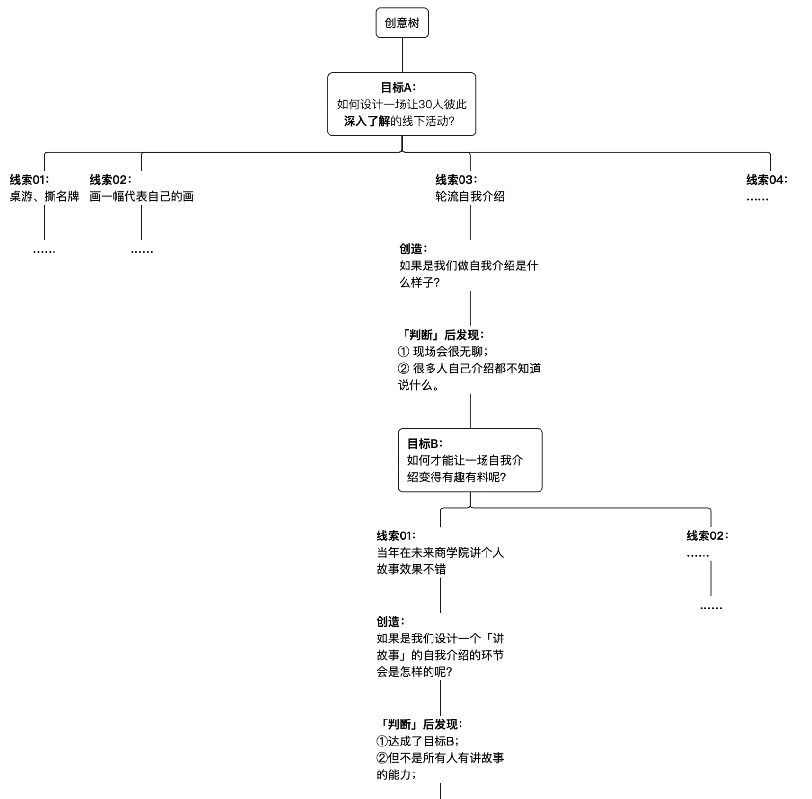
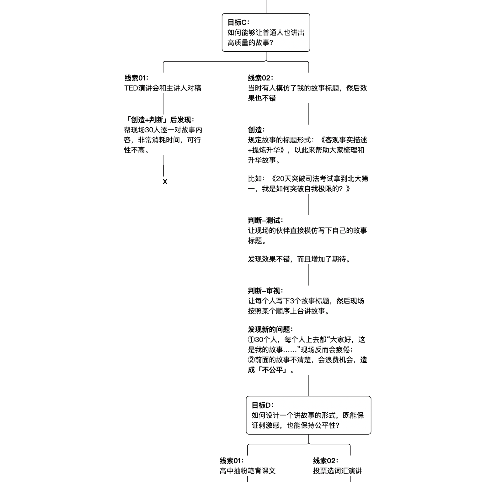
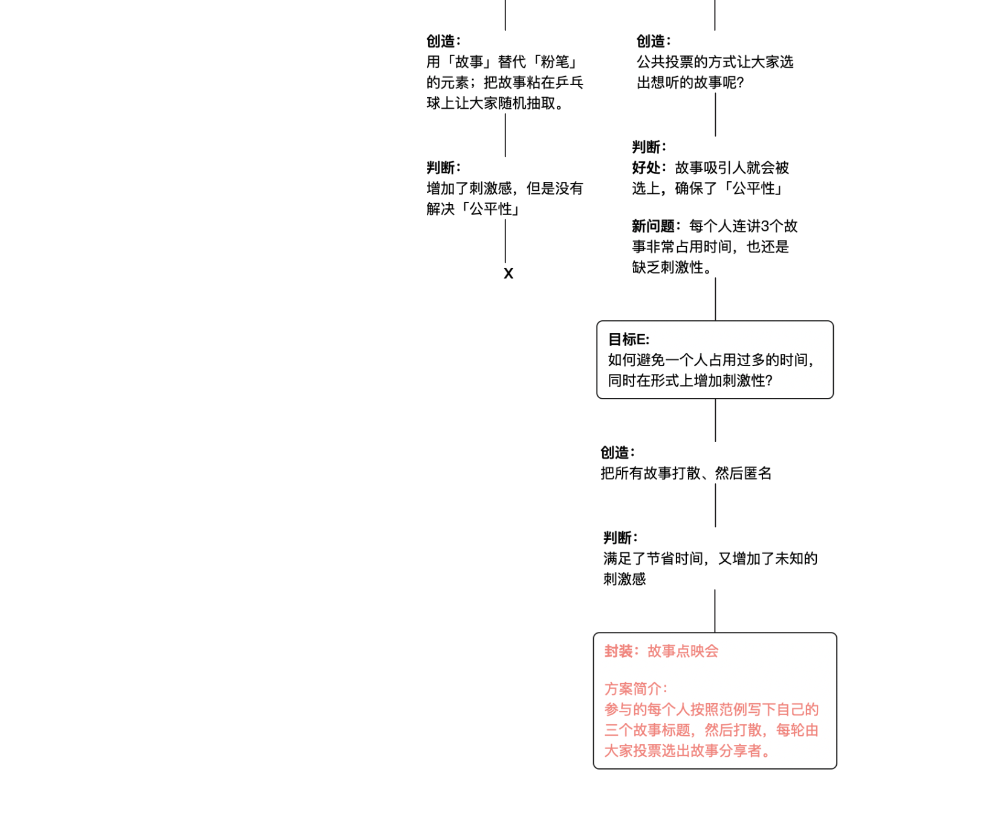

本周课程目录
导师：宋超/北辰青年创始人&CEO、未来大学发起人
「底层能力大课」
如何提升创意能力并想出令人惊叹的点子？
01 课程开篇：创意是有迹可循的
02 案例解析：如何做一场有深度的线下活动？
03 创意方法：「创意树」方法详讲
04 创意心态：解决问题的乐观者心态
05 日常练习：归纳发散、替换组合
06 课程结尾：创意的本质是什么？
课程导言
导言讲述：Bean/未来大学教研主编
遇见未来更好的自己，这里是未来大学。我是来自教研组的Bean。
后面的课程导言，将由我和未来大学发起人宋超老师（北辰青年创始人&CEO），一起为大家录制。
本周的课程导师就是宋超老师。这次的主题便是「创意」。
为什么是这个主题呢？北辰青年从成立到现在，设计和创造的活动就有几百场，超哥参与并且把控了其中大部分的创意内容，他自己经常会冒出很多点子。我还记得有一天，他早上突然发消息说：我想到，我们是不是可以做一场活动，叫《睡不着先生和起不来小姐》呢？
又突然有一天，他郑重其事地把我们叫到办公室，说我们是不是可以设计一副扑克牌，带着青年人一起成长行动呢？于是就有了WEEKUP行动，18天54张成长挑战卡牌，里面还有2张鬼牌，是终极挑战；卡牌4个花色和自我认知、能力提升、视野拓展和价值创造先联系。后来一经发布，参与活动的人数就达到3W人。
所以教研组，有一天就问宋超老师：你有没有想过把你的创意能力赋能给大？
他说可以试试，早在几年前他就开始思考「什么是创意的本质了」这个问题。后来他发现创意的99％其实是逻辑分析，而大家却只看到了那1%的灵感。
于是经过梳理之后，我们力求把宋超老师的思维过程在课程中展示给你。课程将会冲破很多你对于创意的误解，以及课程将展示创意的思维流程、创意的日常练习方法。
好了，如果你已经报名了未来大学基石学院，那么就让我们马上开始本周的课程吧。
课程开篇：创意是有迹可循的
你好，我是宋超，我是北辰青年的创始人CEO，也是未来大学的发起人。
北辰青年从2012年创立以来，设计了几百场线上线下的活动，在全国范围内同时发起，我们带领年轻人们跳出舒适圈，探索自己，认识世界，不断完成自己的提升和成长。
这其中有我们的线上《有趣人类实验室》，比如我们想让大家停下手中的忙碌，离开充满碎片化信息的都市，在自然里深度探索内心，感受生命。于是我们发起了一个活动，叫「邀请10对男女进深山，让人生暂停36个小时」。
比如，我们想让大家重新思考爱情的意义，和过去的感情正式告别，于是我们发起了一个活动，叫「收集1000个失恋纪念物，建一座“失恋冷藏馆”」的活动。
再比如，梳理和重新思考自己的过去经历，对于一个人的自我认知、自我接纳有着非常重要的价值，所以我们发起了「一起用5个小时，完成你的“1/4人生回忆录”」这样一个活动。
而在线下，我们曾号召全国上万年轻人加入「凌晨四点温暖行动」，为校园和城市的守夜人，比如环卫工人、保安大叔、拾荒老人等等，在深夜送去温暖的饮品。
当然，像是「真青年对抗假世界」、「城市漂流书店」、「情绪裸奔馆」这样有趣好玩的成长活动就更多了；同时，我们在教育创新项目中，比如未来大学商学院、YES GO行动、未来大学线下行动中，更是创造了「寻找城市制服劳动者」、「死亡教育」、「即兴艺术体验」、「城市五感探索」等等有教育性质但好玩有趣的活动。
作为CEO，我常常在外拜访合作伙伴、投资人，也和北辰青年的粉丝、未来大学的学员们线下见面，我听到大家对我们最大评价就是：我非常喜欢北辰青年，你们的活动很有意思，非常有创意。
很多人就会问我们，北辰青年都是怎么想出这么多有创意的活动呢？为什么你公司的伙伴都这么有想法呢？
有人会觉得，创意能力这件事情真的太宝贵了，可能是因为北辰青年的伙伴有专属的天赋，才能想出这么棒的创意。
事实上，我也常常问自己，「创意」这件事本质上究竟是什么？创意这件事可以被赋能吗？创意这件事有方法可循吗？它真的就是那种灵感的突然降临吗？
在早期，包括我自己在内还真的是这么认为的，因为在北辰青年早期，很多经典的创意想法，都是在某个午后，或者洗澡的时刻，突然就涌入脑海。这让我一度以为，创意就是大家常常说的灵感。
但到了北辰青年发展了几年之后，当我们每周要拿出3个以上成型、有价值的创意时，我发现所谓「等灵感降临」这件事特别不靠谱，而且非常不可控。
后来，我们慢慢意识到，创意其实是有迹可循，是有一套思维方式的。创意的背后是一种思考分析的能力。很多人对创意有误解：觉得能做创意的人都是那些天生很有点子、头脑很灵活的人。但其实人人都可以是创意家。
于是，我和教研组一起梳理了我和团队过去所有的创意过程，总结出了一套通用的方法论，在今天的《创意人本能》这个课程里分享给你。
那么你可能会问，创意和我有什么关系呢？我又不在北辰青年工作，如果我的职业不是品牌、不是广告、不是自媒体，那我可以用创意干什么呢？
事实上，创意和每个人都有关系，比如在日常生活中，你想给伴侣一场惊喜；再比如你想为自己社团或者公司团队组织一场见面会；也有可能，领导突然让你策划一场年会等等。这些时候，创意的能力就显得非常重要了。
不过需要说明的是，这堂课程的内容是从媒体传播、品牌策划这样的专业领域提炼出来的，是面向于大众的一套创意思维方法。
课程中不会涉及和品牌、广告、室内、产品等等这些专业领域相关的内容，因为那些创意的复杂度与独特性和其本身行业关系密切，并不适合大众。同时，课程中也不会涉及市面上所谓的「泛创意」，比如如何过一个有创意的周末，如何做一个有创意的手工等等。这些我们都不会涉及到。
课程将从一个实际的案例出发，我会带着你感受整个创意思考的过程，然后为你总结提炼创意的思维方法。接着我会和你谈谈创意的日常练习方法，以及创意的本质是什么。学习的时候，建议你反复思考案例，甚至试着在纸上梳理一下，以便掌握这套思维方式。
好了，接下来，就让我们一一展开吧。
案例解析：如何做一场有深度的线下活动？
我们先从一个真实的案例出发。
假设你所在的团队，既有新伙伴也有老伙伴，但是大家都不太熟悉。这个时候，你被任命为策划人，需要你设计一场线下活动让大家彼此之间深度了解。你会如何设计这场活动呢？你要怎么设计才能让这场活动称得上有创意，而且大家参与的感受都很好呢？
可能也有一些人的第一反应是检索自己的大脑，想到一些见过的活动，比如撕名牌、玩桌游等等这种都算得上是团建的活动。
再或者呢，有些人第一反应都是我上网搜一下，看看有哪些团建活动值得推荐，然后选择一个。
这些过程本身都没有问题，但是你很有可能忽略了，这次活动的目的是让「大家彼此深度了解」。但我们可能就抓住了「团建」这个标签，然后开始检索大脑，或者上网搜索，可是这些活动只能活跃团队气氛，让彼此熟悉，很适合第一次的破冰场合，但并不符合让大家彼此深度了解这个目的。那怎么办呢？
假设你选了撕名牌的方向，你可能会说，那就让撕名牌的时候，如果A撕了B，那么B就要回答A三个问题，这样可以让大家了解了吧。你的其他伙伴可能说这个想法不错，试试看。
但是，我们想一想，就会发现不太对，在撕名牌的场景下，大家都处于一种非常紧张刺激的竞赛氛围，这个时候即便A问了B问题，也很容易走形式，A会更在意立马问完，赶紧去撕下一个人，大家根本没有在一个深度了解的情景之中。这样做，看上去解决了问题，但是我们却忽略了参与者实际的体验和感受。
另外呢，你可能还会遇到一种情况，那就是假设你提出了：既然让大家彼此深入了解，那就让大家做一个自我介绍演讲呗。
这个时候大家就会说：不行不行，这个太普通了，太没有创意了，平时不都是这样做的吗？然后就放弃了。这个时候有人说，那就大家来用一下最近比较流行的「爱情36问」的形式吧，结果有人还是会说：不行不行，我们团队那么多人，1对1问答，这个时间太久了，轮不过来；如果1个人面对多个，有些问题很个人、很私密，大家就不愿意参与、不愿意说了。
你看，最后大家想了很多，发现都不行。然后就卡在那里。
刚刚我提到这个场景，其实特别普遍，甚至在我们公司也经常会发生，它就是我们日常在思考创意的时候，经常会遇到的误区。这些误区有哪些呢？
第一个就是「关注形式，而忽略目标」。也就是说，我们可能突然想到一个很好的方式，看着特别吸引人，比如刚刚提到的撕名牌，但是却很容易忽略了活动要解决的是「让彼此深入了解」这个目的。这些目的看起来还是很接近的，但当你细化去分析的时候，会发现还是很不一样的。
第二个就是「从自己出发，而忽略了实际体验」。这也是一个常见的误区。比如我们刚刚讨论的时候，觉得撕名牌+提问是个好方式，如果在撕名牌之后还能立刻问对方三个问题，其实提出这个创意的人还挺有新意的，他会兴奋自己能想到这个点，但是会很容易忽略，到了那种紧张的竞争环境之下，这个环节并不合理，甚至还影响了撕名牌本身的体验。这就是常说的「办公室里的想法到了真实情况中，都很容易想当然 」。
第三个误区则是，「下意识否定，而忽略了分析问题」。很多时候，当别人提出一个想法时，当然不是那么成熟，我们经常发现团队的其他人很自然地看到这个想法不完善的一面，然后立刻就去打断、否定：你看这个不行，这还有那个问题呢。也就导致了不管是个人还是一个团队常常提出很多想法，最后发现都没有一个可以行得通，然后陷入思维的死水状态。这是因为：下意识否定会在一开始就扼杀了创意的可能性。
除了这三个误区，很多人对于创意还有一个理解误区，那就是「创意是碎片化的思维过程」。什么是碎片化呢？首先是觉得创意在脑海中，只是一些分散的想法，突然抓到这个，又突然想到那个，但是整个过程中没有任何的思考依据，因为大家都觉得创意就是灵感嘛；其次呢，就像我开头提到的那样，创意来自于晚上洗澡时、下班的公车里，或者午后发呆的时候。而且会给你举很多例子，你看，我那个点子就是我在洗澡的时候想出来的。
事实上，正确的创意流程是可以避免我们刚刚说的四个误区的。
接下来，我就尝试带着你回顾一下，我们当时是如何设计一场能够让大家彼此深度了解的线下活动的？
当时，公司组织大家外出团建，为期两天一夜。报名参与了那次的团建有30人左右。我和策划团队在开始的时候，就明确了大目标：如何设计一场让30人彼此深入了解的线下活动？
每个人就开始照常的头脑风暴，一开始提出的和前面说的差不多，线索有自我介绍、撕名牌、玩桌游，以及「3分钟记住你」、「每个人画一幅代表自己的画」等等这些看上去还不错，但也略微普通的想法。
接着我们开始思考，哪些线索更符合要求的，可以进一步深入进行创造。因为场地限制，形式单一，而且无法让彼此深入了解，我们放弃了桌游、撕名牌等这些线索。然后「3分钟记住你」这个概念，在大家到的第一天已经玩过了，大家后续的想法可能会枯竭，也就放弃了。「画画」这件事情，乍一想觉得这个很偏个人，现场会很安静，所有也先放在一边了。大家注意一下，我们放下的这些很有可能后面会捡回来，不是彻底否定它，而是先把它放一放，我们先来看一下当下最有戏的一个线索。
后来发现，我们只剩下「自我介绍」这个线索了。当时大家就陷入深思，因为感觉其他也不怎么样？
如果顺着「自我介绍」，我试着想象了我们自己做这个场景是什么样子的？大致应该是大家围坐一圈，然后轮流上去自我介绍。
这个时候，我们发现这种形式面临2个最主要的阻碍：一个是，这样的现场真的非常无聊，听众有30个人，听到后半场估计都快睡着了；第二个是，很多人在自我介绍的时候根本不知道说什么？讲得一般，反而降低了现场的参与质量。
那么可以怎么办呢？我当时就想：如何才能让一场自我介绍变得有趣有料呢？我告诉自己，这个是我接下来思考的一个目标。
我就开始在脑海中寻找线索。我记得前两年，在未来大学商学院的开学典礼上，我现场给大家讲了一个我自己的故事，其实在未来大学第一周的课程里，我们就聊过那个故事，题目就是《20天突破司法考试拿到北大全班第一，我是如何突破自我极限的？》。
我记得当时的很多学员结束后反馈，在未来大学商学院的时候很喜欢我的故事，而且当时现场讲故事的氛围真的非常好。
我当时就问自己，那如果我们的线下活动设计出一个用故事来自我介绍的环节，会是怎样的？那应该就是大家在室内的场地里，带着自己的经历，然后包装成一个故事，上去讲给大家。
然后我开始审视脑海中的这个画面有没有满足我们想要达成的目标，也就是，它有没有让一场自我介绍变得有趣有料呢？
首先故事很好地解决了普通自我介绍没有感染力，没有吸引力的问题；其次，故事让每个人都有了可以讲的内容，不用自己再凭空想了。
我觉得符合目标了。这个时候，我就和团队提出：我们现场让大家用自己的经历给大家讲故事怎么样？
有人觉得很好，很认同。但也有人立马站出来反对：那因为你很会演讲，其他人做不到你的水平，你看你的故事题目包装得多好，很多人根本不懂得升华和提炼，讲出来也很一般。
我觉得也有这个可能性，然后这个时候我试着回想之前的很多讲故事的情景，发现大多数人讲故事很容易变得流水账，从初中讲到大学，没有任何的吸引力。
当我提出「讲故事」这个方案后，你会发现，随之而来的是新的阻碍。我接着开始问自己：有没有一种方式是能够让普通人也讲出高质量的故事呢？你看，我遇到了第二个阻碍，同时也就有了一个新的思考小目标。
围绕这个思考目标，我继续寻找线索。一个线索是，我想起TED之前邀请我去做主讲嘉宾，会有一个专门帮我打磨演讲稿的老师，他就帮助我们很多不大会讲故事的学员和导师能够把故事讲好；第二个线索，我想起当时我在未来大学商学院演讲完之后，现场有一位伙伴，他自己在别的地方也有分享，他就模仿了我的标题，写了一个很类似的标题，结束之后他还告诉我，其实他特别不会讲故事，但模仿了我包装的标题之后，反而他很会围绕那个标题，展开他的故事，最后还升华了，他觉得非常有用。
这个时候我就有两个线索了。我接着在脑海中构思，我该如何使用这两个线索？第一个线索给我的提示是，如果我提前帮每个讲者对一遍分享的故事，应该就会效果好一些，当时有30人，可行性明显很低；那么我就看第二个线索，想到有没有可能我提前给到大家「标题范例」和一些小的规定，来帮助大家梳理经历和升华故事呢？
我的那个标题范例是，前半句是对自己某段经历的描述，比如：20天突破司法考试拿到北大全班第一，而且这个标题还有些标题党，在吸引人方面很有用；后半句是对故事主题的提炼和总结，比如：我是如何突破自我极限的？
我觉得这个值得试一试，但是我拿不准这个方法是否可行，于是我就现场开始做测试：让大家也仿照写下自己故事的标题。然后现场出现了各种各样的标题：《用脸赚钱的模特生涯，关于钱我还是希望用才华来赚 》、《穿着租来的衣服爬上非洲最高峰，我战胜了20年的恐高》等等这样的标题。
那说明刚刚的这个方法可行。而且这样的故事标题上吸引人，看了之后对故事很有期待感，这也一定程度上打破了普通自我介绍的枯燥和乏味。
认可了这个方式后，我们设计了：让每个人写下3个故事标题，然后现场按照某个顺序上台讲故事。
然而这个时候，新的阻碍又出现了。我们发现，虽然都是标题党，但是如果现场有90个故事，其实看着反而没有感觉了，然后再加上每个人上台都是“大家好，我的故事是……”，现场听着也会很疲倦。
另外一方面，因为人数有限，不是人人能分享的，如果前面的人故事不精彩，就白白浪费了时间，而后面精彩的故事可能没有机会讲了，这对于后面的人多少有些不公平。
所以新的阻碍就是「现场刺激感不够」而且「容易不公平」。那么新的思考目标出现了：如何设计一个讲故事的形式，既能保证刺激感，也能保持公平性？
有人针对这个目标，提出了第一个线索：他高中那会，班主任有一天让他们轮流抽粉笔，抽到绿色粉笔的人就要上去背《滕王阁序》，现在想起来都觉得心惊胆战的，能保证刺激性。
这个时候，我们做了进一步的创造：有没有可能把粉笔这个元素替换成故事呢，让大家抽故事。因为现场有乒乓球，我们还做了一下组合，也就是把故事写成关键词粘在乒乓球上面，让大家随机抽取。
感受一下觉得还可以，因为故事是临时抽的，对于听的人和讲的人都是未知，你也不知道下一个是不是轮到你，听的人也不知道下一个故事会听到什么。现场的期待感和刺激感就增加了。不过再审视一遍后发现：因为这种随机性，确实保证了刺激感，如果抽到的故事没那么不精彩，时间又有限，可能真正精彩的故事又没有被抽到，还是没有解决「故事不精彩导致的时间浪费问题」。
因为随机性带来的风险，这个阻碍没办法解决，看起来此路不通。
我们又开始在脑海检索，有了第二个线索：有人说之前参加演讲培训，主持人在屏幕上公布了几十个词语，然后让大家举手投票，选出最喜欢和最不喜欢的词语后，接下来的演讲就要围绕这两个词语。
我们试着做了一步迁移，我们是不是可以尝试用公共投票的方式让大家选出想听的故事呢？
因为故事都是大家自己投票的，如果故事因为不精彩没有选上也很正常，是比较公平的。
这个时候，大家脑海中的画面是，屏幕上有30个名字，每个名字下面有3个故事，供大家投票。但是一想就会发现，每个人连续讲3个故事这样还是很占用时间；而且大家都知道哪些故事属于哪些人，缺乏新鲜刺激感。
所以，这个时候很明显需要解决：如何避免一个人占用过多的时间，同时还在形式上增加趣味性或者刺激性？
于是，我们决定把故事打散，还把名字抹掉。这样现场纯粹选择故事，但是大家看到故事，不知道是谁，就会非常好奇地猜测；另外现场的人也不知道下一个是不是自己，因为每轮都是大家投票的。所以，这样一来，整个现场的活动，神秘感、新奇感和期待感都有了。而且一个人只需要讲一个故事，也保证了时间利用上的充分有效。
当时突然觉得，整个过程就好像在KTV点歌，或者像点播电影一样，这种感觉很有意思，所以我们就给整个活动取了个名字，叫做「故事点映会」。
想到这里，「故事点映会」就是参与的每个人按照范例写下自己的三个故事标题，然后我们把所有的故事打散，投在大屏幕上，把人的名字隐去，每轮由大家投票故事分享者。然后故事的主人站上来给大家分享。
这个活动最终就设计出来了，相比于开头的轮流「自我介绍」，不仅在观感上，还是在流程上都优化了很多。
最后，我们还从「故事点映会」这个名字倒着往前想，既然很像一个电影点映会，那么其实我们现场可以是黑暗的，灯光只聚焦分享者，现场的氛围会特别好。
同时我们还会想，是不是每个人进来的时候，就可以手里拿一张门票呢，用来点播故事，于是我们就给每个人制作了一张「点映票」，上面有所有人的故事标题，一方面可以当做大家的目录，方便检阅；另一方面如果有人私下感兴趣某个故事，但是现场没有讲到，那么他就可以私下去找到对方。
最后，「故事点映会」的现场效果特别好，大家意犹未尽，我至今记着当时的几个故事，比如：《5天4夜摆脱香港骗局旅行，危机中我如何逃出魔爪？》、《一根断指对一个男孩的童年意味着什么？》、《搭车去尼泊尔，目击冲突引发我对生命的思考》。
你看，刚刚我把当时设计活动的整个思维过程展示给了你。不知道你有没有发现，创意的过程其实是一个问题激发出另一个问题，但是随着不断锁定这些问题，解决问题，最终会完善出一整个创意。
我把这套方法叫做「精益创意树」，或者也可以简称「创意树」。「精益」来自于《精益创意》；但就创意树本身而言，很好的描述我们的整个思维过程：作为整个创意的过程，是一个枝条延伸出另一个枝条，直到最终构思完毕。
很多人都误以为：「创意就是一上来给人一个惊艳的而且完整的方案」，其实很多时候创意是一种递进的、线性的方式产生的。很多新的思路，会在后面动态的出现，这才是做创意最惊喜的地方。
这套方法的流程是这样的：锁定目标，然后围绕目标寻找线索，之后将线索经过创造得出一个解决思路，最后对这个解决思路进行理性判断，看看是不是要继续或者哪里需要完善，然后就可以不断完善和优化整个创意思路。
总结一下就是，创意树有核心的四个步骤：目标、线索、创造和判断。另外，当你完成整个创意后，可以把创意打包，起个名字，比如「故事点映会」，这一步叫做「封装」。
好了，在下一部分，我会为你详细讲解创意树4个步骤，以及什么是封装。
为了方便你更好的理解创意树，我们把整个思维过程整理成课程卡片，供你参考：



创意方法：「创意树」详讲
我们现在来详细谈谈「创意树」这个方法。
目标
首先「创意树」不管是起始点，还是思考过程中的支点，都有一个非常核心要素，那就是「目标」。这里的目标，其实就是问：你要解决的问题是什么？
「正确精准地锁定问题，找到自己要思考的目标」是创意中非常关键的能力。
我举个很常见的例子：
有一次，我们在北辰青年做一场六一儿童节的线上活动，有人说我们做「童年杂货铺」吧，就是让大家线上会议中分享自己童年时候玩的游戏，用的物品等等，非常有怀旧感。
另外一个小伙伴说，不行不行，你那个太普通了，我们做「童年通讯录」吧，让大家去联系小时候关系很好，但是好久没有联络的朋友，这个多有意义呀！
然后两个人既说了自己的优点，也提出了对方观点的不足，但是怎么样也无法达成统一。
我过去之后，我就问他们：所以你们要解决的问题是什么？你们这个活动的目标是什么？他们一下子就懵了。我就接着问：你们讨论的目标的是什么？现场就不说话了。
从他们的表情你会发现，他们的思考和讨论的起点根本没有确定。
我就和他们说：
你看呀，如果你想做「童年杂货铺」，其实你是想带着大家去回忆和分享小时候好玩有趣的经历。那么你这个呢，「童年通讯录」其实是在提倡年轻人和自己生命重要的人多建立联系。
很明显你们想要解决的都不是一个问题。争执是再自然不过的事情。
假设，我们认为「和自己的生命里重要的人多建立联系」很有意义，是我们本次儿童节活动的目标，那么我们做的事情可以不限于小时候的朋友，还有小时候的老师、邻居、亲戚，甚至以小时候的名义给自己的父母写一封信，感谢他们小时候对自己的照顾。这些都是思路。
然后，再假设，我们要做一场「让大家回忆小时候美好经历」的活动，那么杂货铺也只是一种表现形式。我们是不是可以做「老照片回忆」、「写一本自己的童年传记」等等呢？
所以，当你讨论的目标都不一致的时候，展开的可能性也完全不一样，两个人带着不同的目标又不说出来，在例子上彼此争执，自然也没有结果了。
你看，我们很多时候的思考，或者讨论都是想到什么就是什么，或者单凭直觉判断就开始了下一步。就比如当我们拿到「要做一个六一儿童节的活动」这个命题很大，我们应该问自己：我希望做成什么样子？我为什么要做这个？我的这个活动想给别人实现什么价值？
这个问题，才是真正在「锁定问题，找到目标」的阶段。如果说这里有一个教训要分享给你，那就是：永远不要急着开始，而是先搞清楚目标。
线索
我们继续往下走：当我们脑海中装着目标，下一步就是「寻找线索」。因为我们要解决目标问题。
那么寻找线索有哪些方式呢？基本上分为两种：外部搜索和内部搜索。
所谓外部搜索，是向外部寻找线索，寻找别人过往都是怎么做的？
普遍做法是去知乎、搜狗、百度、谷歌、微信公众号等地方寻找，这里我不做详细展开。
外部搜索的第二种是向别人发问：在你记忆中，有没有记忆特别深刻的六一儿童节活动，而且是帮助你回到童年乐趣的那种活动呢？等等。这就是一个典型的发问，因为你的目标确定了，让大家找回童年乐趣，但是你没有线索啊，所以你可以问别人有没有类似的情况。
发问的对象既可以是你的伙伴，也可以是专家，或者是身边的人，目的是尽快多的搜集线索。
内部搜索，很好理解，也就是去搜索你自己记忆中的事物或者意向。过去你经历的、看过的、听过的等等，都有可能成为启发你的因素。
比如让自己回到童年很有乐趣的感觉，你可能会想起曾经你在一个商场里看到现场的活动，也会想起在某个公众号上的活动也蛮有意思的，这都是你在内部搜索。
但不管是外部搜索还是内部搜索时，很多人常常会陷入一种错误的预期之中。比如，之前公司想在某个日子办一场团建活动，我观察到其中一位实习生伙伴花了两天时间，只是在搜索网上的案例。我就问他，你为什么花这么长的时间搜索？
他告诉我：我自己想了好多过去玩过的团建活动，但是发现也没有一个可以用的。然后我就一直找资料，但是发现还是没有一个可以用的。
这个，就是他的错误预期，他指望可以找到一个可以用的方案，直接拿来用，但这实际上很难，而且非常耗费时间。
这里有三个搜索原则，你需要知道：
第一，永远不要指望找到拿来即用的方案。很多时候方案本身需要因地制宜。因为对方的方案是从Why，也就是「目标问题」出发的；而你只看到了What，也就是他是怎么做的，所以对方的案例不适合也是很正常的。
你要做的是快速感受，觉得可以用得上的，赶紧保存下来作为线索。作为后面一步，「创造」时候的素材。
第二，带着你想解决的目标去寻找线索。很多时候我们的注意力很容易找到一个参考案例，然后被它的外在形式、表达概念所吸引，然后花了大量时间研究细节。很有可能最后发现，根本不符合我们要解决的问题。
比如你想做一个儿童节活动，让大家回到快乐的状态，结果你大量的时间停留在儿童节让大家回到一个专注的状态这样一种另外的目标里，这些案例的帮助价值就非常小了。
所以始终装着自己的目标，可以让你又快又准。
第三，线索是可以提炼和分类的。所谓分类，拿团建举例，可能有「一对多类」、「团队竞赛类」，或者有「问答类」、「挑战类」等等，所以当你拿到很多例子的时候，建议你先分类再去寻找线索。这样你的可能性会更多。不然，很有可能花了很长的时间，而你的线索却只有单一的类别，非常不利于你后面的思考。
创造
刚刚提到“永远不要指望找到拿来即用的方案”，也就是说线索其实很多时候都是无法直接使用的，而且很多线索都是一个很小的念头、或者是一个不清晰的意象。
这个时候你要知道，线索通常只是个药引子，想要真正变成自己的创意还需要「创造」这么一步，这是创意的关键。也就是把一个启发、念头、意象、参考变成你可用的东西。而创造的方式有多种多样。
我曾经听一位创意总监这么描述创意：所谓创意就是旧有事物的组合。这个其实也只是一种方式而已。
在「故事点映会」的案例中，我们可以回顾一下，最终想到「大家给故事投票」，用到了迁移、替换这样的小方法。包括在结尾命名的时候，我们由点播电影想到点播故事，然后提出「故事点映会」这个名字，也是在做创造。这个方法在创意中叫做「比喻」。
在后面的「日常练习」的部分，我会和你详细讲讲如何做「创造」这个环节。
判断
当我们拿着「线索」做了「创造」这一步，我们就有了针对目标的一个解决思路，接下来是判断这一步。
所谓判断就是去看这个解决思路是否值得继续下去，以及还有哪些地方需要完善。
判断有三种方式：审视、测试和同理。
先说说审视，就是我们应该从一些不同的维度去看这个解决思路是否符合我们的要求。首先，一定是看这个解决思路能不能达成我们的目标，有没有解决问题？
比如说让每个人讲故事这样的解决思路，有没有达成让大家深度认识这个目标。目标永远是做创意的根本。
然后从三个维度去看。
一是独特性，也就是形式特别还是比较常见？别人听到是不过如此还是眼前一亮？
二是可行性，比如人力、物力、财力这些成本能否支撑，是不是有环境、场地的限制，甚至是不是对参与者都有很高的要求，等等。
三是约束条件，指的是是不是符合公司理念、团队气质，是不是符合领导或者团队伙伴的特殊要求等等。
比如说，北辰青年做过那么多的创意活动，我们首要考虑的约束条件就是这个活动对于青年人的成长有没有价值？因为这是我们公司的理念，如果没有，即便是市面上的爆款活动或者热门话题，我们也不会轻易开启，除非我们可以加以改造。
你可以根据自己所在的情景，具体去看约束条件是什么？身处乙方的同学，甲方的要求可能是约束条件；做某些商业活动，一些商业伦理可能是约束条件等等；给女朋友办一场生日派对，可能她的偏好就是最重要的约束条件。
判断的另一种方式是「测试」。
还记得，当我提出「利用标题的范例引导大家讲故事」这个解决思路后，我做的第一件事情，就是让大家现场试着写自己的故事标题，看能不能参考这个标题把自己的故事包装起来，也就是实地测试。
简单来说，测试的目的就是尽可能收集真实反馈，以此来完善你的想法。如果你自己觉得很好，但实际测试发现困难重重，那你的想法就应该重新分析一下，看看是不是合理的。
最后一种判断方式是「同理」。也就是通过想象，将自己代入用户场景去体验，而不仅仅限于自己的第一反应。
举个例子，假设一个男生想要给同班的女生送礼物，于是他有了这样的设想：当所有人到了教室，女生发现自己的课桌里多了一个盒子，里面有她最爱的物品，包装很精美，看着也特别神秘。在众人的瞩目下打开，就很有惊喜感。
这个时候，作为一个创意策划人，我们一定要想：假设我是这个女生，自己早上去到教室，然后坐下来。
我会不会去看课桌的格子？那个盒子长什么样，会不会吸引人？我是会偷偷藏着以后再看，还是会当场打开？我当场打开是不是会因为别人起哄而尴尬，还是会感到惊喜……等等。这些都是去还原那个最真实的场景，然后感受每个环节、参与人的每个动作都会带来怎样的结果。这样你才能发现那些体验不好的地方，然后想办法完善它。
你可能想象一下会发现，那个女生会下意识把盒子推到一边，理都不会理，最后下课自己又走了，盒子都没带走。这样的话，整个创意也就失败了。所以，进行一次同理的测试非常重要。
不过，同理心的困难在于：很多人不具备细腻的感受能力，而且不同的人对于同一件事情的反应程度不一样。所以，同理心很大程度上受限于策划人的个人特质。
但是，做这样的同理可以让你发现很多细微但是关键的缺失。我通常都是配合「测试」使用，也就是拿着解决思路去让大家实际体验一遍，看现场效果，但是自己也会去进行想象和同理。
或者还是拿刚刚送女生礼物的例子，我应该会在办公室的隐秘处放一台相机，偷偷录下大家早上真实的行为习惯，刚来到办公室看到盒子，是不是会注意到盒子，以及会不会打开，其他人的反应是什么等等。这种方法也叫盲测。
这种创意的判断方式和《精益创业》这本书中提到的「最小化成本测试」的方法非常相像，也就是在过程中先打个小样，看看体验者的反应，然后再去优化迭代。这也就是为什么我把「创意树」也叫做「精益创意」的原因。
好了，刚刚的这些我们都在谈论「判断」这一步都有哪些方式？分别是「审视」、「测试」和「同理」。
这决定了我们从线索，创造出的解决思路，要不要继续思考下去？以及如果要思考下去，那么有哪些地方需要完善？
当你经过判断，找到了需要完善的地方。这些都将会成为你思考的下一个目标：我该怎么做才能完善它？我该怎么做才能解决它？
然后，继续顺着线索，创造，最终不断完善出你的创意方案。
封装
顺带，我们简单谈谈封装的概念。你常常听到很多概念或者名字，比如「失恋冷藏馆」、「不知道诊所」等等，这些就是「封装」。
不要以为封装就只是给创意起个名字，这个在传播上决定别人愿不愿意打开了解这个内容，以及能不能吸引到别人。因为人们往往需要听到一个故事，听到一个概念，才会激发他们参与的兴趣。
不过今天，我们主要来谈谈封装对于我们做创意有什么意义？
意义在于：①根据封装，我们给创意塑造一个场景；②我们可以回头去强化创意的独特性。
比如，如果我们最后的活动名字叫做「深夜故事航班」，那么我们可以为了用户体验，将现场布置成一个航班。
不过，封装往往有个风险，需要特别提示你：就是很多时候，我们会痴迷于「概念」。比如：我们做个「烦恼搓澡堂」吧，我们做个「愿望快递」吧，但是内容他都没多想，也对玩法本身要解决的目标不清晰，其实就是用「概念」代替了「解决问题」。
我之所以，把封装放在最后一步，是因为起名字，相比解决问题，要容易很多。所以做创意的时候，我们会发现很多小伙伴，对目标的解决方案一筹莫展，但就先起一个炫酷的名字，然后就觉得创意也不错，但其实内容完全没有出来，用户体验也很糟糕。所以我们要先克制住想要包装概念的冲动，脑海中浮现过的话，把它记下来，然后还是回到要解决的问题本身。
北辰青年的活动往往被别人评价为很有创意，其实很多人从来都没有参加过北辰青年的活动，但光看目录和标题，就会发现，手写集装箱、1/4人生回忆录、4小时死亡体验等等，听起来就很有创意，但其实这是很多人的第一反应。
一个方案最终有没有创意，有两个衡量指标：① 有没有独特和新颖；② 有没有解决目标。你看大部分的注意力集中在新颖和独特，但其实真正去评价一个创意，要看它有没有解决目标。
手写集装箱，要看线上的活动最终有没有把大家带回到手写时代的专注和活在当下，而1/4人生回忆录除了包装这个名字，它真的要把人带到20多岁对自己的人生进行梳理，这才是真正的目标。如果你的目标没有解决好，光是取一个包装的概念，那真的是徒有其表。可是我们每个人在做创意的时候，还挺容易忽略解决目标这个诉求，单单去取一个好名字，找噱头。
好了，以上就是「创意树」的整套方法，4个步骤：目标、线索、创造和判断，以及顺带还提了「封装」这个概念。
创意心态：解决问题的乐观者心态
接下来，我们一起聊聊做创意的心态这件事。
初级的创意人，常常会被思考过程中出现的阻碍或者说困难所卡住。
我拿课程中提到的案例来说：
当我提出「讲故事」的时候，大家的第一反应都是：不行不行，那是你会讲故事；不行不行，很多人都没有好玩有趣的故事。
按照大家的说法，「讲故事」这个方向应该就要放弃了。但是幸好没有放弃，才有了后面的「故事点映会」这个创意。
而这样的场景经常在团队讨论中发生。
尤其是在北辰青年创立的初期，我常常有一种感觉：我在用一种强烈的乐观在对抗大家的悲观。什么意思？我们做创意讨论时，肯定常常遇到困难，在我看来，我总是会觉得此处一定要有办法，然后解决掉就行了。
但是大多数人的习惯是做一个正确的观察者。当其他人提出了一个想法，他就好像一个评委一样说：你这个这里不行，那里也不行，这么说好像是不通的。提出想法的人会备受打击，然后会反击说：那你怎么不想呢？
讨论往往陷入僵局。所以不管是个人思考也好，团队讨论也罢。我们需要建立一个心态：「解决问题的乐观者心态」。在创业圈常常有一句话叫做：悲观者永远正确，乐观者往往成功。
所以，避开自己「下意识否定和批判」思维误区，然后用乐观的心态去尝试解决问题。做创意和创业一样，一定要忍受自己在阶段中的、过程中的作品是粗糙和不完整的，然后想办法去完善它。
所以沿着上面的那个例子，我就会说，好呀，我接受「讲故事」这个方式不是人人都会的，那么我是不是可以问自己：如何才能让普通人也讲出高质量的故事呢？这个思维一变，它就从一个悲观的事实变成了一个积极的解决方向。
当我锁定了这个解决方向的目标，下面的所有思路才能被打开。
所以，在做创意的过程中遇到阻碍或者困难是再正常不过的事情，创意都是一点一点推敲出来的。我通常有一个小心法，分享给你，就是当我遇到这种困难的时候，我都会问自己：现在距离我期待的结果，还差什么？
或者，我会告诉自己：如果有人解决了这个问题，他是在哪完成了突破？
由此，你就打通了整个创意树的关键。也就是当你判断后发现，解决思路出现了新的问题、困难或者阻碍，先不要急着放弃或者否定，而是尝试去解决问题，这样你才能真正成为一个能做出创意的人。
日常练习：归纳发散、替换组合
讲完了做创意的方法，接下来我们来谈谈，日常练习创意的方法。为什么要日常练习，因为创意中的线索和你的思维习惯 ，都是来自于日常的积累和思考。「书到用时方恨少」，说的就是做创意时的感觉，你经常会质问自己为什么想法这么少？
那么除了平时多看案例，我们怎么样能够发挥日常练习的最大价值呢？
在这里我为你提供两种经典的方法：归纳发散，以及替换组合。
其实做创意的方法有非常多，你到知乎、或一些文章里可以找到一些比我讲的更专业的知识，我在这就抛砖引玉，讲两个我自己觉得比较好用的方式。
这两种方法就是我在上面提到的创意的关键：「创造」这一步。也就是如何把一个既有的线索，创造变成一个解决思路。
接下来，我给你演示一下。
比如说，围绕「如何在线下创造人与人深度互动」这个命题，手上的案例可能只有三个：①趴趴派奇幻漂流、②塔罗牌两人玩、③黑暗中对话。
手里有三个线索，那么如何展开呢？接下来我们要做的就是归纳和发散。
我们具体来看。
趴趴派奇幻漂流是北辰青年的经典活动，线下6-12人根据上帝的问题做出选择和回答，每轮淘汰一人。问题涉及道德选择、价值观判断、内心拷问等。想了一下发现，这个活动我可以将其归纳为：群体性+问答闯关式交流。
塔罗牌两人玩则可以归纳为：两个人+借助工具游戏互动；而黑暗中对话则是突破了平常的感官体验，创造了全新的互动，这种场景下，人们的核心体验会聚焦于感官。
做了这样的提炼，我们就有了大方向上的指引，然后我们继续往下思考：群体性+问答闯关式交流，是不是可以延伸出「天黑请闭眼的推理游戏」、「每轮淘汰一人的辩论竞赛」呢？以及延伸出「小黑屋的轮流拷问」等等呢？
关于「两个人+借助工具游戏互动」，除了塔罗牌之外，关于电影、音乐、价值观层面问题的卡牌作为工具，是否也可以设计的？ 塔罗牌是不是可以换成抽签、采访、一人表演一人配音这些方式让两个人之间进行游戏互动呢？
蒙住眼的感官体验，是不是可以考虑：视觉层面的变化是蒙眼，听觉层面呢？能否利用无声场景创造人与人互动？能不能只用一条腿来走路的方式来体验呢？
你看，这个就是典型的线索提炼（归纳），当我们手里有了一个线索，试着用抽象的方式去概括它的特性，然后再由这些特性去发散寻找更多的创意线索。
接下来，还有第二种方式，就是：替换和组合。
我举个例子。
这几年CP类的活动很火，最常见的就是一周情侣。那除了记住这个创意，我们还能做什么呢？
比如说觉得这个创意很好，我们这个社团或者公司也玩一下吧！但是这是别人家的创意啊， 你又不能直接拿来抄袭。
我们具体分析一下，一周情侣究竟是什么？为什么做得这么吸引人？都有哪些元素？
可以很直接地看到，这是一个为期一周的线上交友活动，被匹配的两个人之间会模拟情侣，有很强互动。
接下来第二步，就问这个活动中的元素有没有可能替换掉？形成新的组合呢？
一周其实代表了「时间」这个元素，那么有没有可能变成周末48小时、一个学期、或者暑假寒假呢？
另外，「时间」这个维度除了改变「时长」，「时间点」有没有可能变化呢？比如期末，或者520那一天等等。
那「场景」这个元素呢？有没有可能被替换呢？比如说从线上换到线下？
接着，参与者的「互动方式」这个元素有没有可能替换呢？比如从「情侣交往」，变成「读书」、「了解专业」、「交流职业」等等呢？
还有，人数上有没有可能从一对一，变成二对二，三对三呢？
做了这样的元素替换，然后重新组合，就有了很多北辰青年的经典活动：比如说我们把一周CP的一周时间上替换成48小时，线上替换成线下，互动方式从为了谈恋爱变成体验对方的城市，于是就有了「48小时城市交换」，同理也有了「72小时专业互换」、「一周同桌」、「10对男女进深山」等活动。这都是进行元素的替换。
这样的元素替换和组合，你会发现不知不觉间产生了大量的创意。慢慢地，你会形成自己的一个创意库，必要的时候就可以直接拿来用了。
好了，这里就先告一段落。上面这两种方式，就是创意中非常典型的「创造」方法了。
课程结尾：创意的本质
最后，我们来一起回顾一下今天我们都讲了什么？
整个课程中我和你提到了很多对于创意的误解，这些误解都有：创意是少数人的事情、创意就是灵感爆发、创意是碎片化的思考过程，以及创意就是一上来给人一个惊艳的而且完整的方案。
不过，现在你应该明白了，其实创意是有迹可循的，它有着自己的思维方式。在这套思维方式下创意就是不断解决一个接着一个的问题，直到完善。
在创意的思考中，我们还容易陷入3个误区：「关注形式，而忽略目标」、「从自己出发，而忽略了用户的实际体验」以及「下意识否定，而忽略了分析问题」。
我为你提供一套方法，叫做「创意树」。创意树有4个步骤：
一、目标，也就是锁定你要解决的问题。这一步是创意的核心。
二、线索，在内、外部寻找案例、意象，作为你创造的素材。
三、创造，就是把线索变成针对目标的，符合自己实际的解决思路；这一步是创意的关键。
四、判断，利用审视、测试和同理的方法，来思考这个解决思路有哪些不足，或者要不要继续深入；
最后，你可以用一个很有吸引力的名字将其封装起来。切不能过度关注「概念」本身的新颖程度，而忽略解决问题本身 。
在整个创意过程中，你需要建立「乐观的解决问题心态」，然后经常问自己：如果有人解决了，他是在哪里突破的？这一步很重要，决定了你的创意树是否可以延伸下去。
接着，我在日常练习的部分，和你聊了「创造」这个环节的2种经典方法，分别是：归纳发散和替换组合。
这堂课的信息量是非常大的，创意聊起来是相当复杂的，即便你可能不是一个策划人、创意人，当你在日常中需要解决一些事情，你会发现做创意不是一件容易的事情，所以我们的课程也希望在创意的开始到结束都能给到你一些启发。
在课程的结尾，有一点我需要和你特别指出。如果你去搜索市面上的创意课程，几乎所有教你的创意方法都集中在「创造」这一步上，也就是我们刚刚说的四个步骤里的其中一步。
不可否认的是，「创造」是创意中最困难的一步，即使你今天学了这堂课程，可能也会发现还是不能产出好的创意，很大程度上你可能是卡在了「创造」这里。
但是，为什么今天的课程不单单讲「创造」这个环节呢？那是因为，我发现很多人误以为自己是「创造」能力不够，事实上，他们没有在一开始「锁定问题」，也就是「确定目标」上都做不到。
创意的本质是「锁定、分析和解决问题」的能力。如果说「创造」这个环节是关键，那么起始的「目标」这一步是核心。所以我觉得有必要把创意的整个思维过程呈现给你，这是创意的入门。
上面的「创意练习」部分我只给你提供了2种经典方式，如果你感兴趣，可以去探索更多：比如说类比法、隐喻法、反转法、极限法、情感法等等，数不胜数。
但我希望这堂课是让你建立对于创意的正确意识和思维，所以你完全可以忘掉所谓的创意了，光是去想如何独特、新颖，而不以解决问题为根本目的，都是「耍流氓」的创意。
而且，创意不单单只是所谓的灵光一闪。本质上，创意是99%的逻辑分析，再加最后1%的灵感。
好了，以上就是我本周的「底层能力」课程了。
如果你觉得有收获，可以分享给你的朋友或者其他有需要的人。
遇见未来更好的自己，这里是未来大学，我是宋超，再见。